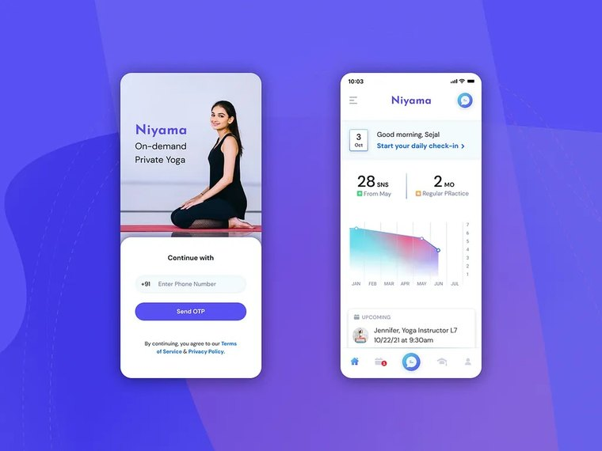
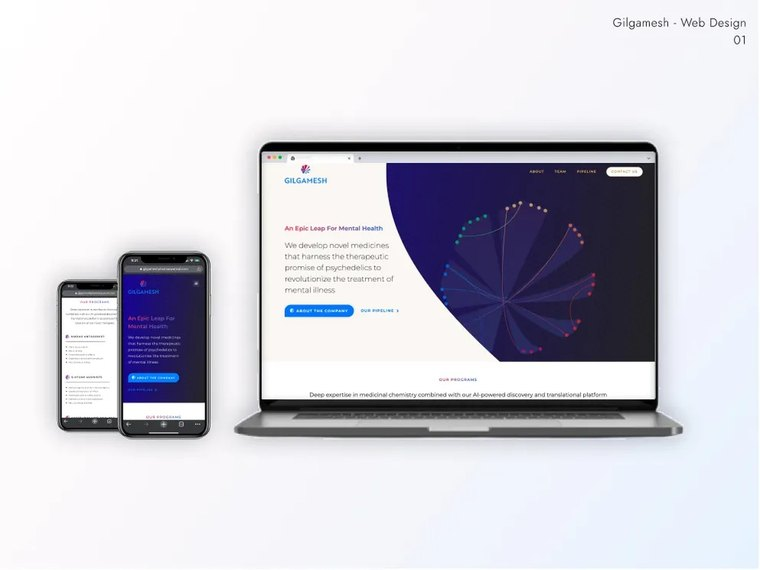
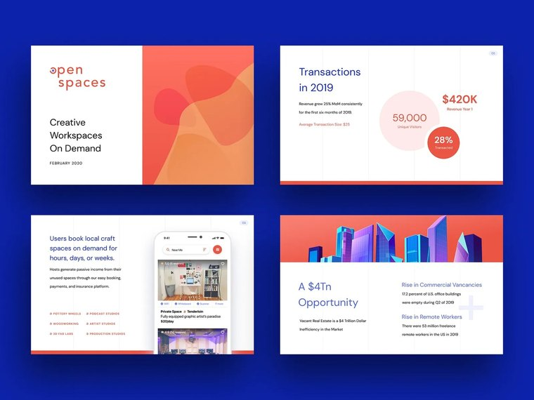
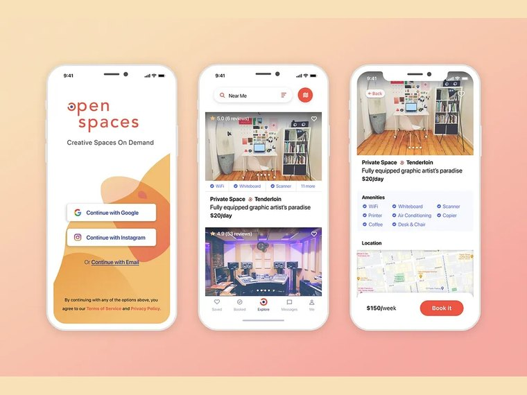
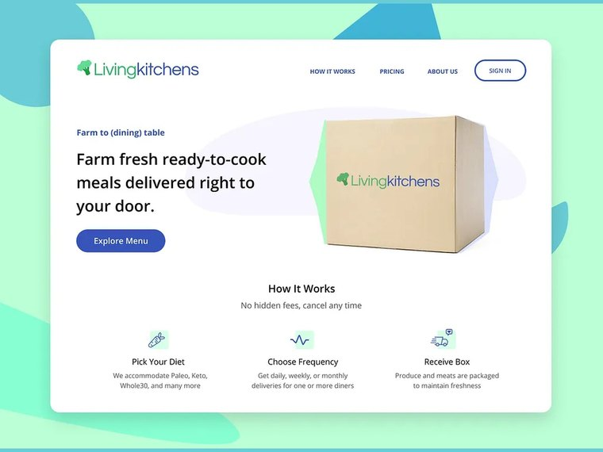
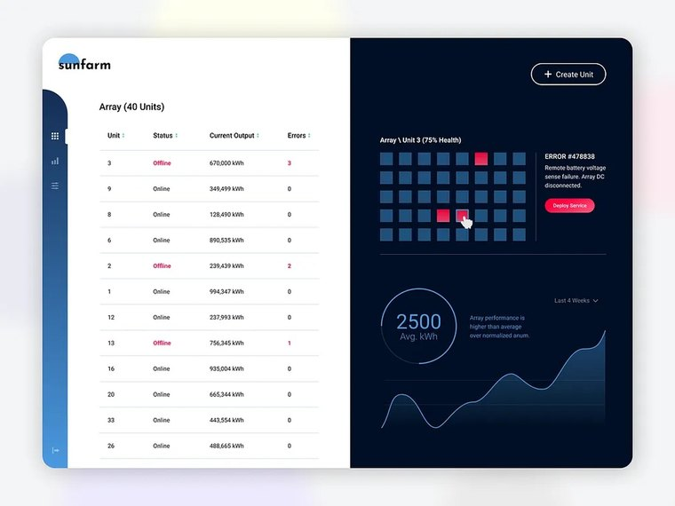
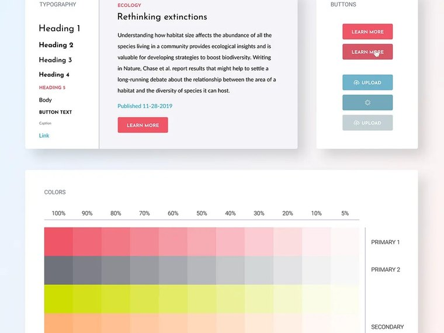
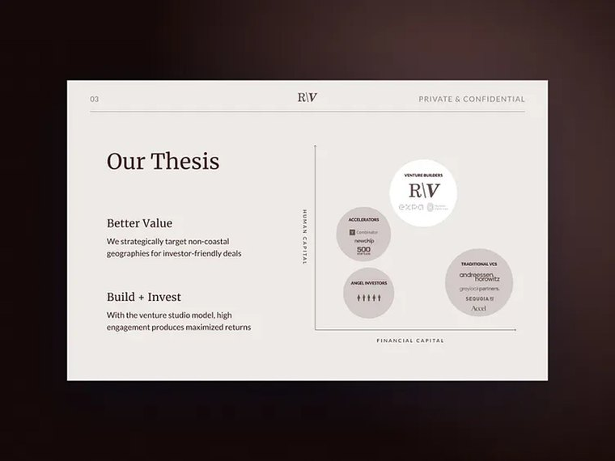
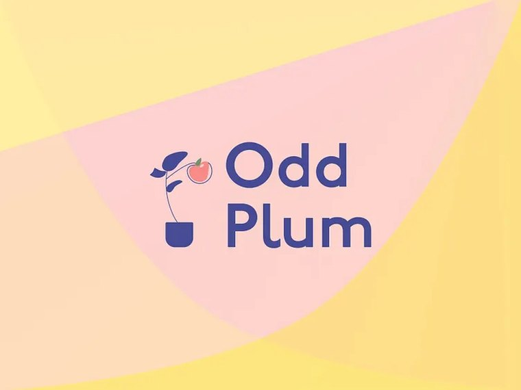

Shahbano Imran
Product Lead & Designer
I work with early-stage teams to take products from idea to validation, owning design and facilitating delivery and GTM. Based in Dallas, TX.
- 16 years in product
 Y Combinator-backed founder
Y Combinator-backed founder- Computer Science degree, Boston College
Case study 01
Apollos: took a donation platform from idea to validation ($16M in gross volume) in 8 months.
Summary
As founding product lead, I took Apollos Giving, a Stripe-based donations platform for large churches and nonprofits, from idea to revenue in eight months. It reached validation with three initial customers and $16M in gross volume, and my original designs are still in production today.
The challenge
This was not a typical 0-to-1 launch. Apollos Giving was a new business line inside an existing company, and our initial customers each collected $100M to $200M a year in donations.
That changed the product approach. In most early-stage work, you aim to ship a lean MVP and iterate from user feedback. With these large customer accounts, every payment bug could affect a substantial amount of money. That meant the product had to be complete and clean on day one, with regulatory compliance requirements met, while still being scoped tightly enough to launch quickly. On top of that, our custom Stripe setup made the platform liable for disputes, refunds and other payment ops, which meant I had to understand payments more deeply than everyone else on the team.
What I did
- Three giving flows. Designed in-app mobile donations using iOS App Clips, a matching web donations flow, and Tap-to-Give with NFC tags I sourced and tested with customers.
- Admin dashboard. Designed a transaction status model separate from Stripe's internal states, so admin users saw statuses that matched how they thought about donations.
- Fast reporting. Designed exports and scheduled reports that used caching to work around slow payment data, so finance teams got reconciliation-ready reports on time.
- Payments and compliance. Learned Stripe's implementation and business model, took the company through Stripe's enhanced due diligence, and worked with tax accountants on the company's liability.
- Vendors and network. Brought in compliance and implementation vendors through my Y Combinator network to solve problems the team couldn't solve alone.
- Delivery and QA. Wrote the roadmap, managed the dev team, and set up our first testing plan with automated nightly tests and exploratory QA.
- Go-to-market. Ran competitive analysis, helped set pricing, and built sales materials and customer financial projections.
Design tools
Outcome
Apollos Giving launched, onboarded three enterprise customers, and processed $16M in gross revenue in eight months.
Where I excelled on this project
- I designed every product surface that's still in production today.
- I learned complex domains fast, from payments to compliance.
- I ran the project like a founder, owning every gap.
- I used my network to unblock problems others couldn't.
Case study 02
Designed the first version of Zepto: 10-minute grocery app that scaled to millions of users.
Summary
I designed the first version of Zepto's mobile app (Android-first) from its launch to the first million users. It now serves ~48M annual users and 2M+ daily orders.
The challenge
This was not your typical grocery delivery app. Along with the app, Zepto owns the entire supply chain, from sourcing, to the stores to last-mile delivery.
That shifted the design focus. For example, when designing a traditional grocery app like Instacart, I may focus on the cart substitutions flow: a user picks an item that is commonly out of stock and has to do extra work to choose substitutions and may drop off. Since Zepto has live inventory data for its stores, this problem doesn't exist.
Zepto's design challenges focused on speed: time was the brand, with a 10-minute delivery promise. Every screen had to feel as fast as the delivery itself.
What I did
- Speed as the brand. Designed for perceived performance with skeleton screens, fast-feeling loading states, and motion that holds attention whenever a user has to wait.
- Frictionless sign-in. Designed Android OTP auth with SMS auto-read, so users were signed in without typing a code, and strategically timed the location permission requests.
- Cart and checkout. Iterated through many cart variants and A/B tests to fit India's payment methods, promotions, and coupons without overwhelming users.
- Catalog density. Designed compact product cards and category navigation for thousands of SKUs, with promotions guiding users toward checkout.
- Live order tracking. Combined motion and illustration around a countdown timer to keep users engaged during the wait.
- Brand and design system. Created the time-themed logo and color system, and a design system that scaled to new sub-brands, like Zepto Cafe.
- Exploration. Explored dozens of flows as wireframes, then shared clickable Figma prototypes so the team could compare them on real phones.
Design tools
Outcome
The result was the end-to-end design of the mobile app, a baseline design system, and a comprehensive spec the dev team could start building from right away. The design held up through hypergrowth, new product lines, and to millions of users.
Where I excelled on this project
- I understood the business like a founder.
- I was fast and experienced, skipping beginner mistakes.
- I worked proactively, with little guidance.
- I designed with implementation complexity in mind.
Case study 03
LocalOn: co-founded a Y Combinator-backed SaaS company and grew it to $1M ARR.
Summary
As co-founder of LocalOn, I designed and built a marketing and mobile loyalty platform for SMBs just as iPhone apps went mainstream. I took it from idea to a real business with paying customers, and it gave me foundational skills for my career.
The challenge
Selling to small businesses is deceptively hard. Their sales cycles look like enterprise sales, but the deal sizes are tiny: our customers paid $60 to $500 a month, yet expected hands-on help and took a long time to onboard.
The biggest challenge wasn't only building the product, it was finding a way to get it into small businesses' hands efficiently.
What I did
- Distribution. Solved the distribution challenge and got quick traction by building a dues-payment product for merchant associations and business districts that worked directly with SMBs, then used those relationships to upsell the SMBs without hand-holding.
- Mobile and web apps. Designed the customer-facing mobile loyalty app and the merchant web app, at a time when mobile patterns were still being formalized.
- User research. Ran interviews with business owners and customers to shape product experiments.
- Product-market fit. Iterated continuously on the product and positioning based on what customers used and paid for.
- Team and funding. Fundraised, then hired and led the team.
- Go-to-market. Ran sales, partnerships, and onboarding directly with customers.
Outcome
LocalOn became a real business with paying customers, backed by Y Combinator and other angel investors. Building it right out of college taught me foundational skills and judgement I still use today. Although the business shut down almost 10 years ago, I still get occasional calls from LocalOn customers telling me they wish it still existed.
Where I excelled on this project
- I treated distribution as a product problem.
- I learned directly from customers in the field.
- I did every job a young company needed.
- I designed for a new platform before patterns existed.
More product work
Other products I've designed.
I've had lots of practice designing products, websites, and decks for customers, employers, and my own ideas.









Brand and logos
Logos and brand kits, created using the Jungian archetypes framework.
I work with founders to capture the essence of the company mission and the intention they want to set forth, using frameworks that help ground those ideas into language.
From there I work on elements like color, type, and a mark that is scalable, unique, and memorable, then create a brand kit the company can use in product and marketing.